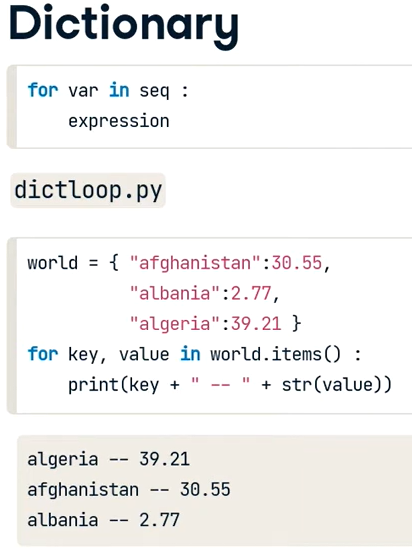
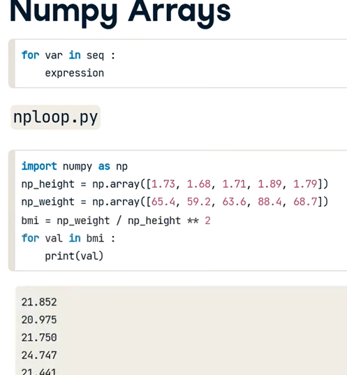
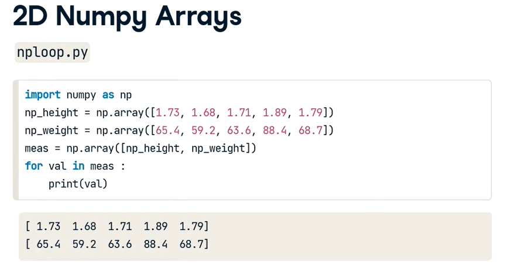
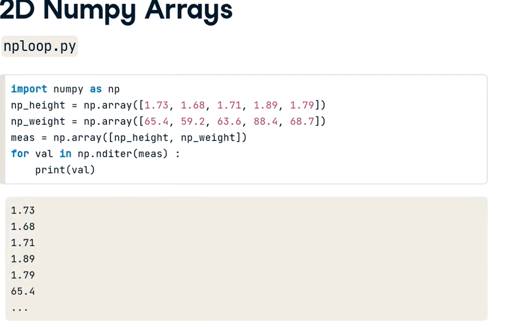
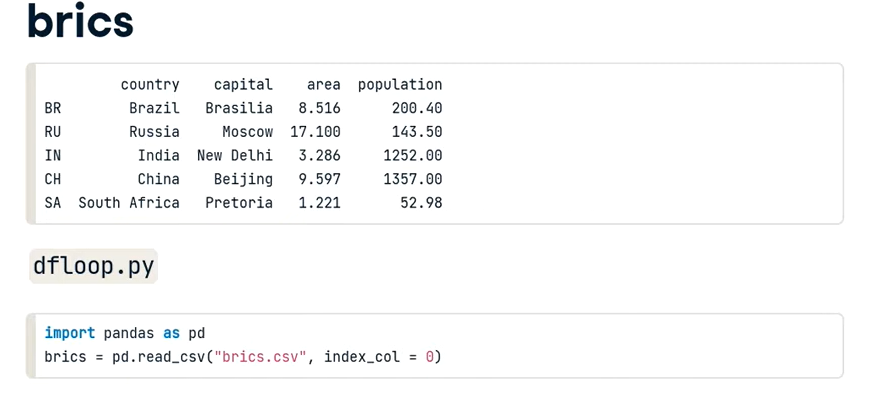
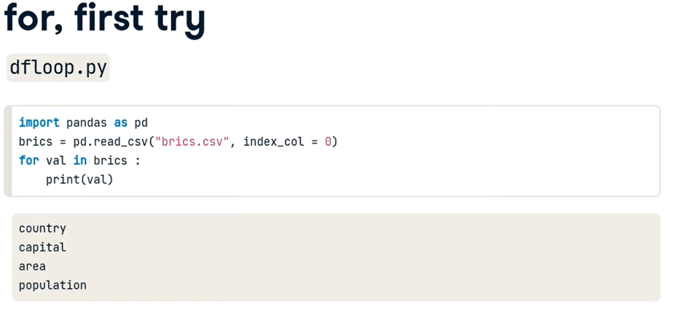
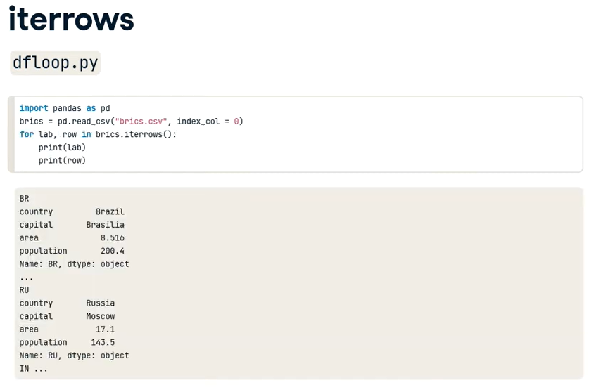
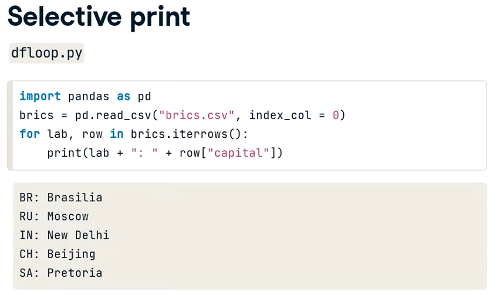
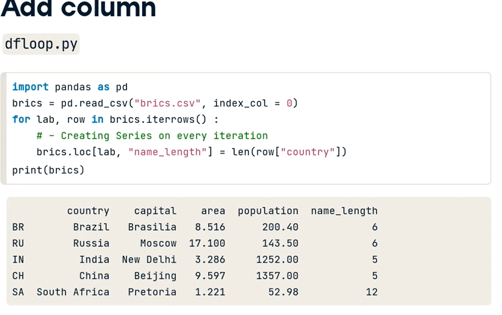
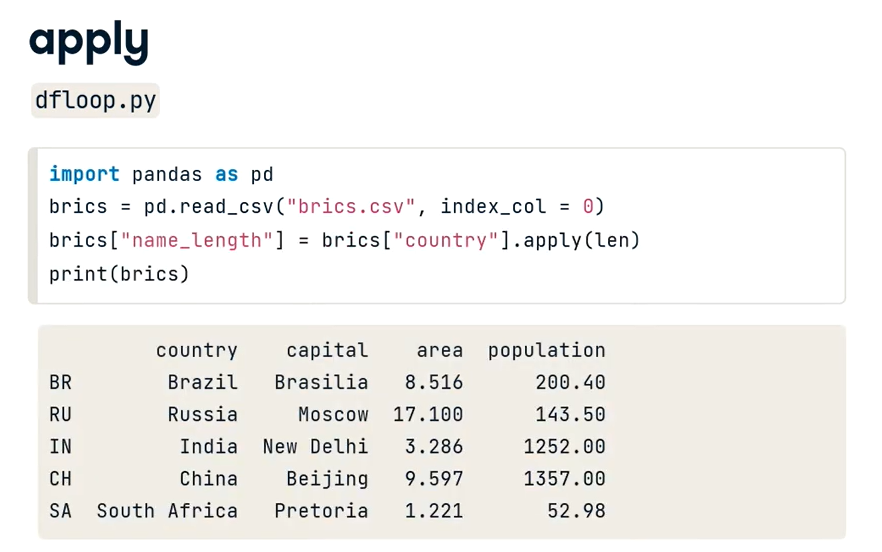

Docente: Dudbil Olvasada Pabon Riaño | UNAB
En el mundo real, los Científicos de Datos rara vez encuentran datos limpios y organizados. A menudo, necesitamos aplicar transformaciones repetitivas a miles o millones de registros.
Esta semana dominaremos las Estructuras de Control (Ciclos) y su integración con Pandas para automatizar el procesamiento y limpieza de volúmenes masivos de datos.
.apply().Iteración: Repetición de un proceso de forma estructurada.
Vectorización: Operación matemática que se aplica a todo un array o matriz a la vez (evita el uso de ciclos, es más rápido).
DataFrame: Tabla bidimensional de datos con filas y columnas.
Script: Archivo de texto plano que contiene instrucciones lógicas para ser ejecutadas por el computador.
Time to switch to English.
Pro-Tip:
In Python, Dictionaries are extremely fast for looking up data.
¿Cómo hacemos que la máquina trabaje por nosotros?
for cliente in lista_clientes:
enviar_correo(cliente)La navaja suiza del Científico de Datos en Python.
Es hora de conocer el concepto de DataFrame.
world = { "afghanistan": 30.55,
"albania": 2.77,
"algeria": 39.21 }
for key, value in world.items():
print(key + " -- " + str(value))
algeria -- 39.21
afghanistan -- 30.55
albania -- 2.77
import numpy as np
np_height = np.array([1.73, 1.68, 1.71, 1.89, 1.79])
np_weight = np.array([65.4, 59.2, 63.6, 88.4, 68.7])
bmi = np_weight / np_height ** 2
for val in bmi:
print(val)
Si iteramos un array 2D, obtendremos cada fila (1D array).
meas = np.array([np_height, np_weight])
for val in meas:
print(val)
¿Y si queremos cada elemento individual?
La función mágica para visitar cada valor escalar.
for val in np.nditer(meas):
print(val)
1.73
1.68
...
65.4
Imagina que tenemos este dataset: brics.csv
import pandas as pd
brics = pd.read_csv("brics.csv", index_col=0)
| country | capital | area | population | |
|---|---|---|---|---|
| BR | Brazil | Brasilia | 8.516 | 200.40 |
| RU | Russia | Moscow | 17.100 | 143.50 |
| IN | India | New Delhi | 3.286 | 1252.00 |
| CH | China | Beijing | 9.597 | 1357.00 |
| SA | South Africa | Pretoria | 1.221 | 52.98 |
Si usamos un for normal, iteramos sobre los nombres de las columnas.
for val in brics:
print(val)
country
capital
area
population
Devuelve el índice y la serie completa (fila).
for lab, row in brics.iterrows():
print(lab)
print(row)
BR
country Brazil
capital Brasilia
area 8.516
population 200.4
Name: BR, dtype: object
...
Podemos acceder a columnas específicas dentro del ciclo.
for lab, row in brics.iterrows():
print(lab + ": " + row["capital"])
BR: Brasilia
RU: Moscow
IN: New Delhi
CH: Beijing
SA: Pretoria
Creamos una serie en cada iteración usando .loc
for lab, row in brics.iterrows():
brics.loc[lab, "name_length"] = len(row["country"])
print(brics)
| country | capital | area | ... | name_length | |
|---|---|---|---|---|---|
| BR | Brazil | Brasilia | 8.516 | ... | 6 |
| RU | Russia | Moscow | 17.100 | ... | 6 |
| IN | India | New Delhi | 3.286 | ... | 5 |
Iterar filas puede ser lento. Es mejor usar funciones vectorizadas.
brics["name_length"] = brics["country"].apply(len)
print(brics)
Pro-Tip: ¡apply() es significativamente más rápido que iterrows() en datasets gigantes!
Análisis de flujos y estructuras en la industria.
Contexto del Caso

Contexto del Caso









Hoy trabajaremos con un dataset más grande (más de 1,000 registros). Aplicaremos ciclos para limpiar textos y Pandas para extraer Insights de negocio.
Abran su Google Colab.
iterrows() es útil, pero debe usarse con precaución en datasets grandes por su impacto en el rendimiento..apply() son el estándar de la industria para optimizar recursos computacionales.A dictionary in Python is a collection of key-value pairs. Unlike lists, which are indexed by a range of numbers, dictionaries are indexed by keys, which can be any immutable type (like strings and numbers).
user = {"name": "Ada", "role": "Data Scientist"}Es una estructura de datos tabular bidimensional, mutable en tamaño y potencialmente heterogénea (con filas y columnas etiquetadas). Es el equivalente a una hoja de cálculo de Excel dentro del código de Python.
Se construye combinando múltiples Series (columnas).